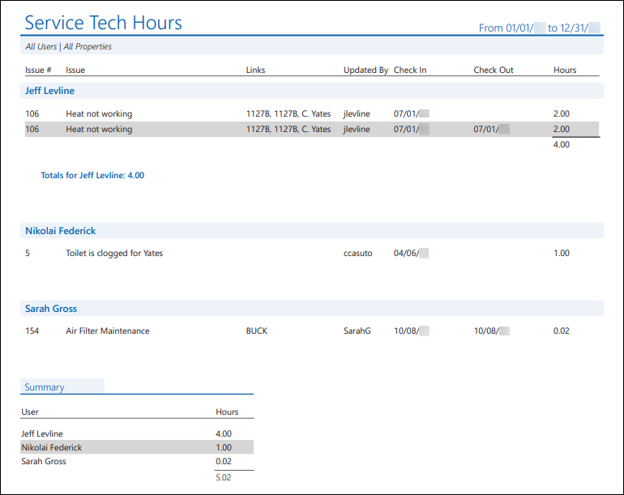
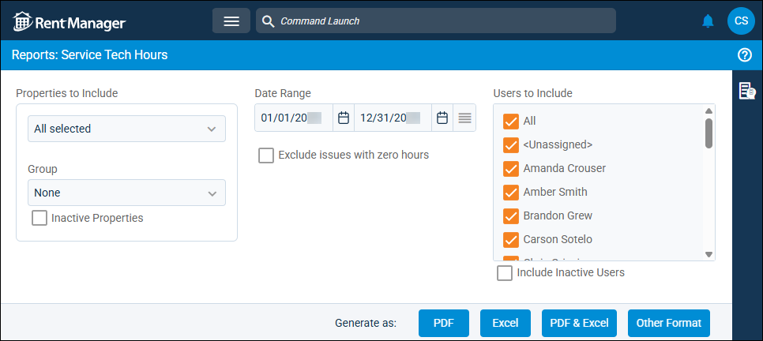
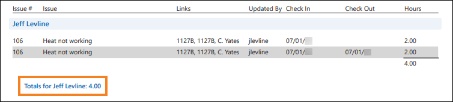
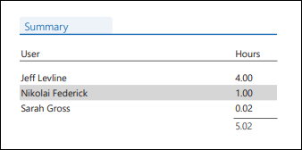

Source: https://rmxhelp.rentmanager.com/Topics/Express/Other/Reports/Service-Tech-Hours.htm
Service Tech Hours (Report)
This report displays the number of service hours each service tech has logged for issues. On the Tech Time Details pop-up, the Check Out field determines whether the time entries are within the selected Date Range report option. Service hours are calculated from entries made via Service Manager or rmAppSuite Pro.
By default, each user (service tech) with service hours tracked during the specified period is displayed in a separate section. Each line in a user’s section depicts the individual hours that were added to the issue. If a user worked on an issue three separate times during the selected date range, three rows display.
Related Privileges
| Group | Privilege | Column |
|---|---|---|
| Letter/Email Templates/Reports/Packets | Run reports | Enabled |
Additionally, on the Reports tab, you must have access to Service Tech Hours.
For more information, refer to Control User Access.
To view the Service Tech Hours report, do the following:
-
Go to
 arrow_forward Services arrow_forward Service Manager arrow_forward Service Tech Hours.
arrow_forward Services arrow_forward Service Manager arrow_forward Service Tech Hours.
The Reports: Service Tech Hours page displays. -
Adjust the report options as desired. Each option is described below.
-
Generate the report in your desired file format(s).
Related Preferences
Reports may look different depending on whether or not the Use modernized report style system preference is enabled. For more information, refer to General Report Options (System Preferences).

Report Options
The report options described below determine what data displays in the report.

Properties to Include
Select each property or a property Group to be included in the report.
More Information
This field populates only with the properties to which you have access. Your access to properties can be managed from your user account or on the property's details page. For more information, refer to Limit Access to a Property.
Optionally, check Show Inactive Properties to include properties that are no longer active.
Date Range
Enter or select the date range to determine the data that displays in the report.
In the Date Range section, set the From and To dates for which the report should examine data.
These fields automatically populate with today’s date. Enter a different date or select a date from the calendar. Alternatively, adjust the dates using the available preset buttons or click  to open more options for setting a date range.
to open more options for setting a date range.
Users to Include
Select the service techs whose service issue Hours are examined in the report.
Optionally, check Include Inactive Users to include user accounts no longer marked as active.
Exclude Issues with Zero Hours
Check to remove issues that have zero (0) service tech hours from the report results. Otherwise, all issues display.
Report Results
The report results are described below including, if applicable, section, column, and subreport descriptions.
Report Header
The report header displays the report name and key information selected in the report options, such as date information and which properties were examined in the report.
Column Descriptions
This report is organized by the username of the service tech. Information about each service tech is organized into columns. The columns that display in the report are described below.
| Column | Description |
|---|---|
|
Check In |
The date and time entered in the issue Check In field. If the service hours were manually entered in the Hours field, the date and time the hours were added displays in this column. |
|
Check Out |
The date and time entered in the issue Check Out field. By default, rows within a user’s section are sorted first by this Check Out date/time and then by Issue #. |
|
Hours |
The service hours calculated for the work session (the difference between the Check In and Check Out times) or the service hours manually entered. Each section contains a subtotal for the service tech.
 |
|
Issue |
The title of the issue as entered in the Service Issue tile of the issue. |
|
Issue # |
The system generated number of each issue with qualifying tracked hours. |
|
Links |
The tenant/prospect, unit, and/or property assigned to the issue. Issues with a linked tenant, prospect, unit, or property display only if the associated property is selected in Properties to Include. |
|
Updated By |
The username of the last user to edit the issue Hours. If the Hours have not been updated since originally added, the username of the user who created the issue displays. |
Summary Subreport
This subreport displays the total number of service hours for each service tech (user) as well as the total for all service tech hours in the report for the specified date range.

The following columns display in the subreport:
| Column | Description |
|---|---|
|
Hours |
The total service hours reported for each service tech during the Date Range. A grand total of hours for all service techs displays after the last line of the subreport. |
|
User |
The name of the service tech with recorded service hours during the Date Range. |